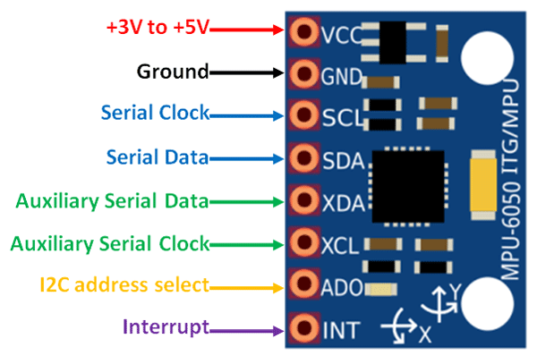
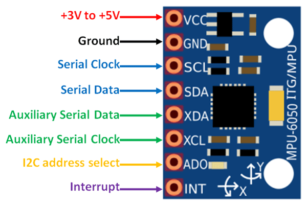

The MPU6050 module is a Micro Electro-Mechanical Systems (MEMS) device that includes a 3-axis Accelerometer and a 3-axis Gyroscope. This allows measurement of acceleration, velocity, orientation, displacement, and many other motion-related parameters.
| Pin Number | Pin Name | Description |
|---|---|---|
| 1 | Vcc | Provides power to the module (3V-5V). Typically +5V is used. |
| 2 | Ground | Connected to system ground |
| 3 | Serial Clock (SCL) | Provides clock pulses for I2C communication |
| 4 | Serial Data (SDA) | Transfers data via I2C |
| 5 | Aux Serial Data (XDA) | Can interface additional I2C modules (optional) |
| 6 | Aux Serial Clock (XCL) | Can interface additional I2C modules (optional) |
| 7 | AD0 | Used to vary the address if multiple MPU6050s share the same I2C bus |
| 8 | Interrupt (INT) | Signals when data is ready for the MCU to read |
More features and technical specifications can be found in the MPU6050 datasheet attached at the bottom of the article.